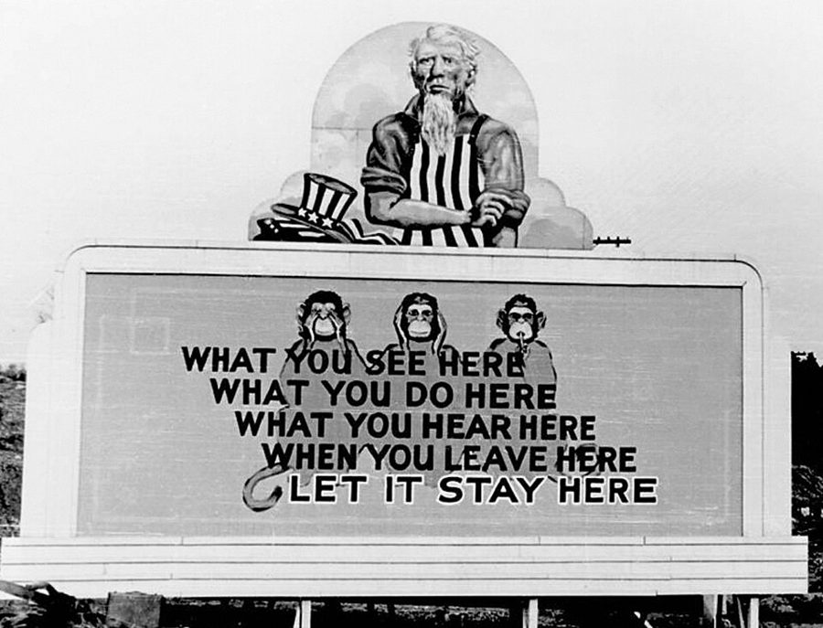
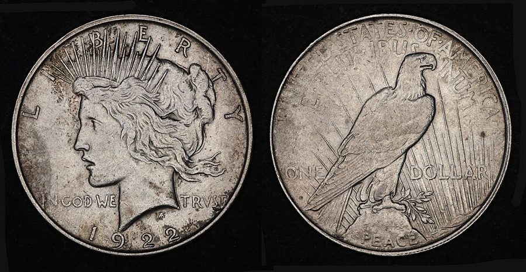

上一页停在两份专利的发明人一栏。这一页是 Dan 消化这件事的一个晚上：先给医生打电话，再跟 Chuck 去喝啤酒，半夜回到住处。
前两个场景是找解释，对话里全是工程师互相打趣的行话。中间三个场景几乎是 Chuck 一个人在说，从保密规矩说到他大学打工的实验室，物理比方一个接一个，是全章最难的一段，先看下面「行话」一节。
最后三个场景只剩 Dan 一个人，节奏突然变快。抓一样：Chuck 每一次是在劝 Dan 做什么、别做什么。
AFTER QUITE A LONG time …约 500 词给 Albrecht 医生打电话。Dan 绕了几句才问正题，留意他问的是哪一种毛病。
Most of the lights went out …约 800 词下班后和 Chuck 喝啤酒，摊开专利。留意 Chuck 给的解释，和他数的头一件、第二件、第三件事。
Sometime later I said suddenly, …约 450 词还在酒馆。Dan 随口一句假设，Chuck 接了一句，两人为「能不能说」较劲。保密的行话。
I’m afraid I didn’t, but …约 1200 词Chuck 讲他大学打工的事。头一段是转述，后面是引语。最长最难，对着行话一节读。
“I’d take a chance on …约 750 词两人抬杠。Chuck 一条一条往下数，留意他一共数了几条，哪一条最硬。
So we had another beer. …约 350 词回到住处，睡前翻一星期的报纸。留意 Dan 固定看哪一栏，图的是什么。
ABOUT THREE IN the morning …约 300 词半夜惊醒，把那摞报纸又翻一遍，这次翻得更细。全是心理活动。
I was shaking with excitement, …约 450 词下楼打电话。留意 Dan 用什么理由让对方开口，还有对方的最后一句话。
背景：作者默认你知道的事
真实世界里的东西，按在书里出现的顺序排。Q clearance 在第 2 章的页面讲过，这里只补 need to know。
场景 1「under the affluence of incohol」
把两个词的开头对调的口误，英语叫 spoonerism。原话是 under the influence of alcohol，警察和法庭说醉酒用的正式措辞。
把它说颠倒是装醉的老笑话：人都喝成这样了，话还想往正式里说。affluence 恰好是个真词（富裕），听着更像回事。
场景 2stein、a head、another round
stein 是德语来的词，带把的厚啤酒杯。美国的德裔移民多，啤酒馆的规矩不少是德国带来的。
a head 有两个意思：啤酒上面那层泡沫，和宿醉第二天的头疼。几个人喝酒按「轮」算，a round 是给在座每人上一杯，喝完再叫下一轮。
场景 2电话簿、中间名和社会保障号
美国的住宅电话簿按姓的字母顺序排，姓后面是名，常常只印首字母。美国人多有中间名（middle name），正式落款常写成两个首字母加姓，比如 D. B. Davis。
social-security number 是 1936 年起政府发给每个人的九位号码，一人一号，是分辨同名人最可靠的办法。书里说全美有两亿五千多万人；真实的 2000 年人口普查是 2.81 亿。
场景 3need to know

二战时橡树岭（Oak Ridge）的保密广告牌：在这儿看到的、做的、听到的，走的时候留在这儿。橡树岭是造原子弹的工厂城，Dan 当兵时待的 Sandia 是同一个系统。
James E. Westcott 摄，公有领域，维基共享资源本站示意图。
美国的保密制度有两道闸。第一道是许可等级（clearance）：查过你的背景，准你接触到哪一级。第二道是 need to know：等级够了，这件事跟你手上的工作无关，照样不告诉你。
政府文件定为机密叫 classify，解除叫 declassify。
场景 4Boulder，和那里真有的低温实验室
University of Colorado 在 Boulder 的校园，楼后是落基山脚下的 Flatirons 岩峰。书里说新实验室建在城外的山里。
照片：Tony Webster，CC BY 2.0，维基共享资源
University of Colorado 的主校区在 Boulder，丹佛西北约 40 公里，紧挨落基山。书里说那儿有个很大的低温实验室，这在 1956 年是实情：
国家标准局 1952 年在 Boulder 建了低温工程实验室，替氢弹计划生产液氢，不过它不归大学。作者当时住在同一个州的 Colorado Springs。
场景 4银元、cartwheel 和 hard money

1922 年的一美元银币（Peace dollar），直径 38 毫米，重将近 27 克。
照片：Amfeli，CC BY 4.0，维基共享资源
一美元的银币又大又沉，外号 cartwheel（车轮）。1950 年代美国东部早就只用纸币，落基山一带的几个州日常买卖还在用银元。
hard money 是金属钱，相对纸币说的。所以 Chuck 特意补一句「那一带当时还用硬币」。
场景 4上校、将星和 carbon copy
美军的上校（colonel）再升一级是准将（brigadier general），肩上的鹰徽换成一颗星。二战时士兵管坐办公室的军官叫 chairborne，是仿 airborne（空降兵）造的。O-in-C 是 officer in charge。
carbon copy 是垫着复写纸打出来的副本，军队的公文一式多份全靠它。邮件里的 cc 就是这两个词的缩写。
染过两遍的。swear someone to secrecy：让人发誓保密。over and above：在……之外再加。
since Caesar invented the carbon copy
… since Caesar invented the carbon copy. …
自打凯撒发明复写副本以来
玩笑。恺撒当然没发明过；意思是军队离不开一式多份的公文，古已有之。
save the day
… to lose, and save the day. …
扭转败局
in hearts and spades
… was crazy in hearts and spades, …
十足地，加倍地
in spades：十足地，黑桃是桥牌里最大的花色。Chuck 再添上红心。第 4 章 Miles 说过 in spades。
buck for
… the star he was bucking for. …
拼命争取（晋升）
军队俚语。star 是准将的那颗星。
I see the hitch
… wait a minute, I see the hitch. …
我看出卡在哪了
hitch 是小故障、绊子。第 2 章 The brain was the real hitch。
use your head
… “Use your head, Danny. With a …
动动脑子
the kinkin’ thing
… you can aim the kinkin’ thing. …
那该死的玩意儿
kink 在书里那个年代是脏字（第 6 章 Dan 为它差点挨揍）。Chuck 拿它当 damn 用。
shock troops
… division of fresh shock troops and …
突击部队
make brigadier
… the ex-prof never made brigadier. But …
升上准将
make 加军衔：升到。
is history
… the other one is history. But …
成了过去的事
your money is no good
… you jump, your money is no good …
你的钱不管用
tied up in it
… an inverse-square law tied up in …
牵扯在里头
just for the hell of it
… try it just for the hell of …
不为什么，就图个痛快
this bird
… when Twitch and this bird, Leo Vincent, …
这位老兄
bird 指人，1950 年代的俚语。
hang around
… I hung around outside. After a …
赖在附近没走
Figure it out yourself
… a week. Figure it out yourself.” …
你自己琢磨去
Does my head look flat?
… “Me? Does my head look flat? …
我看着像傻子吗？
flathead 是骂人笨。
a short beer
… I’d take a short beer instead...but …
一小杯啤酒
婉拒的俏皮话：这份光荣不要，给杯小啤酒就行。
take me up on it
… didn’t take me up on it.” …
接受我这个提议
场景 5 “I’d take a chance on …
take a chance on
… “I’d take a chance on it. …
冒这个险
make tallies
… started making tallies on the tabletop …
画道道计数
tally 是数一个画一道的记号。
sit tight
… Or just sit tight and wait …
待着别动
第 2 章 Dan 自己说过 just by sitting tight。
roll around
… wait for it to roll around; …
（日子）自己转到跟前
by quite a margin
… by quite a margin. So far …
差出一大截
shooting in the dark
… Twitch was shooting in the dark; …
瞎蒙
flunky
… I was just the flunky. Three, …
打杂的
第 6 章 Dan 管招聘处的小职员也叫 flunky。
a stand of
… in a stand of pine trees …
一片（树林）
后面的 western yellow pine 是西黄松，落基山最常见的大松树。
wind up
… was built, maybe you wind up …
最后落到（某处、某种境地）
这一场出现四次。
a million of the best
… took a million of the best …
一百万上好的钞票
shove funny money
… for trying to shove funny money. …
使假钞
funny money 是假钱。shove 是黑话：把假钞花出去。
without half trying
… here and now again without half trying...but …
毫不费力地
Follow me?
… because I didn’t. Follow me?” …
跟得上吗？听懂了吗？
下一段 Chuck 原样还给他。
three jumps ahead of you
… “I’m three jumps ahead of you. …
我比你多想了三步
跳棋的说法。
I won’t buy it
… again, only I won’t buy it. …
我不信这一套
the killer
… of my fifth point. It’s the killer, …
最要命的一条
ain’t about to
… You ain’t about to make any such …
休想，绝不会
be not about to：没打算、不可能。ain’t 是故意说得土。
talk shop
… lunch with him and talk shop. …
聊本行的事
第 6 章的 shoptalk。
look you square in the eye
… I’ll look you square in the eye …
直直地看着你的眼睛
意思是脸不红心不跳地否认。
场景 6 So we had another beer. …
cutting your throat to cure a headache
… as cutting your throat to cure …
为治头疼去抹脖子
over chops and a salad
… Springer just over chops and a …
吃一顿排骨加沙拉的工夫
over 加吃的喝的：边吃边谈。
no sweat
… and a salad, no sweat, no …
不费劲
solid citizen
… now that I was a solid citizen. …
有正经工作、有固定住处的体面市民
几个月前他还因为没地方睡被抓过。
fripperies
… the daily fripperies you find in …
花里胡哨的琐事
vital-statistics column
… and checked the vital-statistics column, the …
（报纸的）生死婚嫁栏
vital 是「和生命有关的」，不是「至关重要的」。
give him a hand
… if I could give him a hand. …
帮他一把
kinfolk
… other Sleepers as my “kinfolk,” the …
亲戚，自家人
outfit
… served in the same outfit is …
部队，单位
不是一身衣服。
a sad lack of it
… not news but a sad lack of …
可悲的是没有消息
it 指 news。
场景 7 ABOUT THREE IN the morning …
the chute
… stuffed them down the chute before …
（扔废纸的）滑道
commitments
… adoptions, changes of name, commitments, and …
入库（进冷眠库）的名单
第 1 章讲过 commit 是「送进某个机构」。
subhead
… to the only subhead I was …
小标题
pop up
… and had not popped up until …
突然冒出来
场景 8 I was shaking with excitement, …
make a botch of
… and made a botch of getting …
弄得一团糟
instrument
… didn’t have an instrument in my …
电话机
电话公司的正式叫法。
supplementary listing
… was simply a supplementary listing for …
附挂的登记
他没有自己的号码，名字挂在房东那部电话底下。
grumpily
… a man looked grumpily at me. …
没好气地
hang on
… I said, “Hang on, please. If …
别挂
give out
… “We don’t give out information about …
对外透露
butt in
… I’m not just butting in; I’m …
多管闲事，硬插进来
trim the given names to initials
… papers trim the given names to initials …
把名削成首字母
given name 是名，相对 family name（姓）。
Could be
… He thought about it. “Could be.” …
也许吧
不情愿的承认。
值得停下来的句子
… while the laws of statistics tell you how unlikely a particular coincidence is, they state just as firmly that coincidences do happen.
— 场景 2，Chuck。本站译：统计规律告诉你某一个巧合有多不可能，它同样斩钉截铁地说：巧合是会发生的。
主干是 while A, B：让步在前，重点在后。斜体的 do happen 是重读。Chuck 的理由是电话簿：不到七百万人里就有十二个 D. B. Davis、三个 Daniel B. Davis，全国两亿五千万人里再出一个同名的工程师不稀奇。
这是个清醒的解释，也是个便宜的解释。Dan 的回答只有一句 It doesn’t prove anything，他没被说服，只是被劝住了。
“But which direction is last week? Point to it. Just try.”
— 场景 4，Chuck。本站译：「可是上个星期在哪个方向？指给我看。你指指看。」
“Then I wouldn’t wind up in a tree—because I didn’t. Follow me?”
— 场景 5，Dan。本站译：「那我就不会落在树里，因为我没落进去过。跟得上吗？」
Dan 的推理：那块地方从没炸过，说明没有人曾经落进树里，所以我去了也不会。时态是关键：wouldn’t 说的是假设中的将来，didn’t 说的是已成事实的过去，他拿后者保证前者。
Chuck 用同一个事实推出相反的结论：没炸过，是因为你根本不会去。两个人都承认过去只有一个版本，分歧只在 Dan 在不在那个版本里。Chuck 管这叫 the old time paradox，说他不吃这一套。
检查一下理解
先在心里答，再点开。答错的那题，回书里把对应的场景再读一遍。
1.（场景 1）Dan 想问 Albrecht 的到底是什么？医生列的几种原因，他认了几种？
他想知道冷眠会不会让人失忆，也就是：会不会那台制图机他其实造过，只是忘了。医生说单由冷眠引起的他没见过，然后列了潜意识里不愿记得、头部受伤、药物或催眠下的暗示，后来又补了醉酒。Dan 说除了头上挨一下，别的都有可能：他被 Belle 下过药、催过眠，之前还醉了两个星期。他没有约时间，说下周初再打。
2.（场景 2）Chuck 说 Dan「连最可能的解释都没提」。是什么解释？他让 Dan 先做哪件事？
同名同姓的巧合：另有一个 D. B. Davis。证据是电话簿上那一栏。他数的三件事是倒着排的：第三件「其实是第一件」，现在别想了，再来一轮酒；第二件，查出专利上那人的全名；这之前不要花钱找精神科医生。就算全名也是 Daniel，中间名和社保号还可能不同。
3.（场景 3）Chuck 起初为什么不肯说？后来又为什么说了？
那件事是机密，他发过誓。Dan 亮出自己从前的 Q clearance，Chuck 承认那相当于 Alpha，比他的 Beta 还高，但 Dan 没有 need to know。Dan 改用激将法，说他不过是打了个酒嗝。Chuck 最后讲了，自己给的理由有两条：讲了也无害；并且要让 Dan 明白这东西帮不了他。